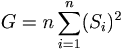
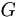

De: La Frikipedia, la enciclopedia extremadamente seria.
De: La Frikipedia, la enciclopedia extremadamente seria. De: La Frikipedia, la enciclopedia extremadamente seria.

Etimológicamente, perfect es una palabra perteneciente al campo de los videojuegos (véase Tekken). Sin embargo, en el campo de la mierdología es donde su significación adquiere el mayor exponente. Según los mierdólogos (en algunas regiones llamados con el eufemismo cacólogos) un perfect es la situación que se da cuando no nos tenemos que lavar el culo después de cagar.
No obstante, la Academia Europea de Mierdología (ESA, del inglés European Shitologism Academy), recuerda que para que una cagada sea considerada un perfect debe cumplir todos estos requisitos:
Las causas de un perfect no están definidas aún por la ESA, pero se está trabajando en ello. No obstante algunos mierdólogos de sectores radicales aseguran que las causas vienen dadas por la teoría del caos.

Si bien las causas no están descritas todavía, si lo están las consecuencias. Además son muy evidentes:
Variante del genuino perfect que denota aún más perfección en el arte de cagar, estrechamente relacionado con el arte de vivir, según los mierdólogos.
El double-perfect es un fenómeno muy raro y por eso más adorado por los expertos en la materia (fecal). Desde la ESA, definen qualitativamente esta variante extraordinaria del perfect como "expresión máxima del arte de cagar conjugada con el sentido de la ecología y la economización de recursos y dinero". Aunque la definición más importante es la cuantitativa. Además de los requisitos que se imponía en el perfect normal debe cumplir que:
Es aconsejable, si se ha meado, tirar de la cadena aunque no haya nada, aparentemente, que limpiar. Si no, no tire, pues puede aspirar a un ultimate-perfect.
Ésta, en realidad, es una variante directa del double-perfect y no directa del perfect genuino. Para considerarse triple-perfect debe reunir estas condiciones además de las del double:
, donde  es el tiempo en ms y la londitud de la mierda en cm.
es el tiempo en ms y la londitud de la mierda en cm.
Nótese que la diferencia entre double y normal es mucho mayor que la diferencia entre double y triple, así que no se deje vacilar por alguien que consiguió un triple-perfect y usted sólo double-perfect.
Sin embargo, no tendrá derecho a rechistar enfrente alguien que asegure que ha hecho un ultimate-perfect. El ultimate-perfect es el summum del summum. Quien lo realice puede andar con la cabeza bien alta pues es considerado por los mierdólogos el gurú de la caca. El ultimate-perfect tiene estas características: NO se puede mear ni antes ni después. NO se puede limpiar ni siquiera para corroborar que, efectivamente, no hay rastro de caca alguno. NO se puede tirar de la cadena
Hay distintos grados de gurú. Así, hablaremos de guru-ל1 (lamed-uno), guru-ל2 (lamed-dos), etc. El lamed es una espécie de dann de las artes marciales. Para calcular el lamed de un gurú se debe recurrir a la siguiente fórmula:
, donde:
es lamed,
 es la suma de double-perfects y triple-perfects separados (se van acumulando) y
es la suma de double-perfects y triple-perfects separados (se van acumulando) y
es la G mayor. G se calcula:
, donde:
 es el grado de ultimate-perfection,
 es el numero de visitas de double-perfect o triple-perfect seguidas que distan 6 horas entre ellas que ha aguantado el váter sin atascarse y
es el numero de visitas de double-perfect o triple-perfect seguidas que distan 6 horas entre ellas que ha aguantado el váter sin atascarse y
es el número de cagarros por cada double o triple perfect.
El actual presidente de la ESA es el jovencísimo Joaquín Herdedorios,que con 13 años es guru-90ל, pues tiene un grado ultimate-perfection 88 (4 zurullos, 2, 1 y 1, todos ellos double) y lleva contabilizados solamente un double y un triple aislados. Sin duda alguna, llegará a ser maestro-gurú-ל2, cada lamed de los cuales requiere llegar a 200 lameds convencionales. Hasta la fecha nadie ha llegado a maestro-gurú, excepto el maestro indio Muhgftak Epat-e emapetilon II el cual llegó a maestro-gurú-1ל más 50 lameds antes de morir asfixiado en su propia mierda cuando intentaba aguantarse para superarse a sí mismo.
Autor(es):